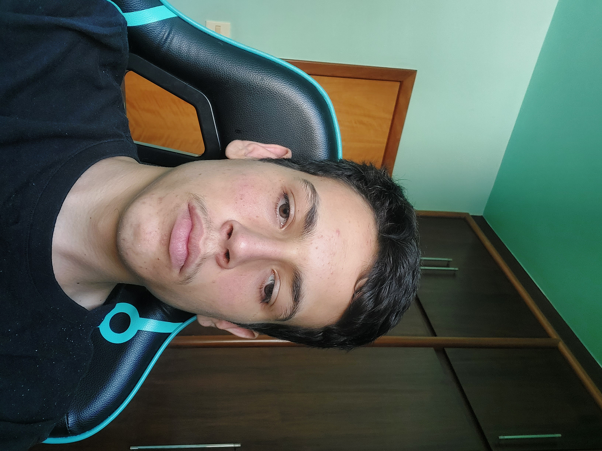

Mar 2022-Mai 2022
Estagiei na empresa organizando e confeccionando planilhas em Excel de orçamentos de despesas, apuração de
margem de contribuição, títulos a receber e relatórios financeiros dos clientes da empresa. Nessa experiência,
tive que trabalhar muito com planilhas em Excel, melhorando meus conhecimentos nessa ferramenta.
Jun 2022-Dez 2022
Fui indicado pela escola para trabalhar como estagiário do Sebrae Minas na Unidade de Gestão de Pessoas, e
desempenhei atividades diversificadas, conseguindo empregar dinamismo a todas elas e entregar no prazo. Esse
estágio no Sebrae Minas me fez descobrir que eu sou uma pessoa versátil, que consegue resolver problemas e
desempenhar vários tipos de tarefas.
Fev 2023-Set 2023
Fui contratado para trabalhar com consultoria de resultados, compilando relatórios de resultado dos períodos das
empresas, fazendo conferências e analisando números, a fim de verificar a existência de flutuações e apontar o
motivo das flutuações. Trabalhei também na implantação do ERP Domínio Web, com conferência de cadastro dos
clientes, parametrização do sistema, acompanhamento e documentação de treinamentos, acompanhamento de
treinamentos ministrados aos clientes e resolução de problema s de inconsistências de cadastro. Trabalhei também
na controladoria, com controle de processos em andamento do escritório no Excel e organizando documentos,
solicitações no E-.CAC, controle de perdcomp dos clientes e emissão e controle de Certidões negativas de débitos
federal, estadual e municipal.
Mar 2025-Presente
Fui contratado para trabalhar no produto 4tax atuando em parceria com consultores SDs na implantação do produto
em novos clientes e na manutenção do produto em clientes antigos. Além disso, atuo no desenvolvimento de
soluções na linguagem ABAP visando melhorias no nosso produto.